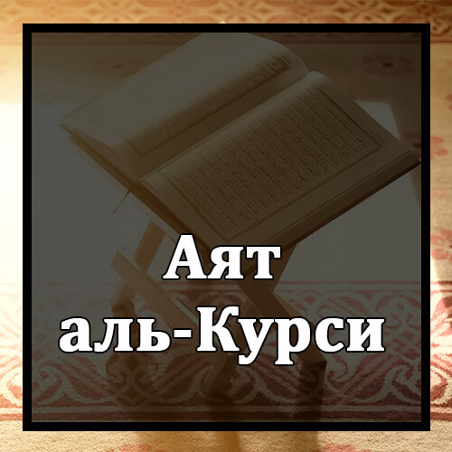

А-ЛЛаху ла илаха илла Ху. Ал-Хаййул-Каййум. Ла та-хузуху сина-туу-уа ла наум. Лаху ма фис-самауати уа ма фил-ард. Манзаллази йашфа-’у ‘индаху илла би-изних? Йа’ламу ма байна айдихим уа ма халфахум. Уа ла йу-хитуна би-шайим-мин ‘ил-михи илла бима ша! Уа-си-’а Курсиййухус-Самауа-ти уал-ард; уа ла йа-уду-ху хифзу-хума уа Хууал-’алиййул-’азым
Аллах – нет божества, кроме Него, и только Ему мы должны поклоняться. Аллах – Живой, Сущий и хранит существование всех людей. Его не объемлет ни дремота, ни сон; Он один владеет тем, что в небесах и на земле; и нет Ему равных. Кто заступится за другого перед Ним без Его дозволения? Аллах – слава Ему Всевышнему! – знает всё, что было и что будет. Никто не может постигнуть ничего из Его мудрости и знания, кроме того, что Он дозволит. Трон Аллаха, Его знания и Его власть обширнее небес и земли, и не тяготит Его охрана их. Поистине, Он – Всевышний, Единый и Великий!